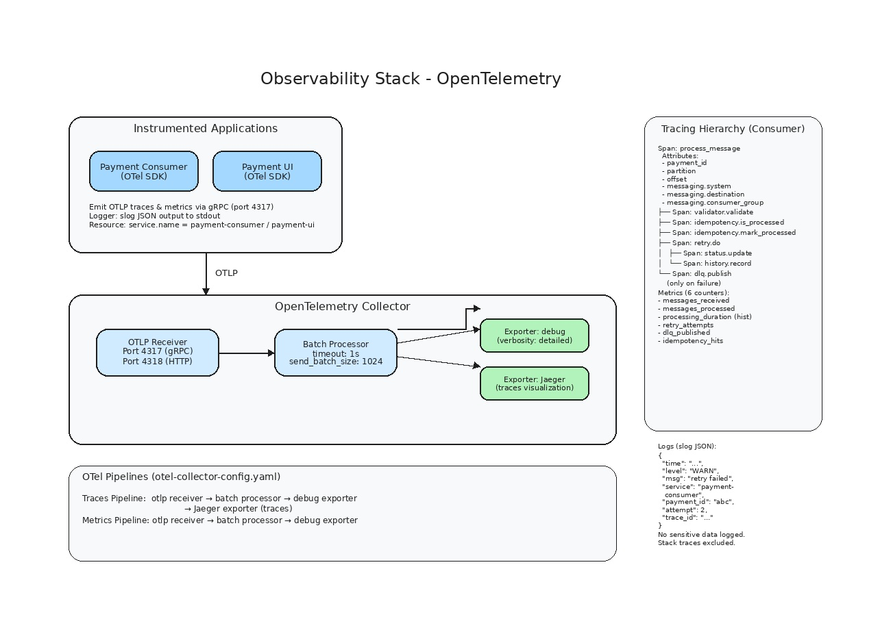

Observabilidade
Documentação completa sobre logs, tracing, métricas e health checks do Payment Processor.
Visão Geral
O sistema utiliza OpenTelemetry como padrão para observabilidade distribuída, combinando três pilares:
- Logs estruturados — via
log/slogcom formato JSON - Tracing distribuído — spans para cada operação com exportação OTLP
- Métricas — counters e histograms exportados via OTLP

Stack de observabilidade: OpenTelemetry Collector com OTLP Receiver, Batch Processor e Exporters (debug, Jaeger). Logs estruturados via log/slog.
Diagrama Interativo da Observabilidade
Pipeline de observabilidade: 3 pilares (logs, tracing, métricas) → OTel Collector → destinos. Health checks em cada aplicação.
Diagrama de sequência UML — Fluxo de observabilidade: logs, tracing e métricas exportados via OTLP, health checks sendo consultados.
OpenTelemetry Setup
Inicialização
A configuração do OpenTelemetry é feita no pacote pkg/telemetry/telemetry.go:
// Inicializa TracerProvider com exportador OTLP gRPC
tp, err := telemetry.InitTracerProvider(ctx, cfg)
// Inicializa MeterProvider com exportador OTLP gRPC
mp, err := telemetry.InitMeterProvider(ctx, cfg)Configuração:
- Exportador OTLP gRPC para o endpoint configurado (default:
localhost:4317) - TracerProvider com
AlwaysSample(desenvolvimento) e batcher com timeout de 5s - MeterProvider com leitor periódico a cada 10s
- Resource com
service.nameconfigurável
OTel Collector
O otel-collector-config.yaml configura o OpenTelemetry Collector para receber e processar telemetria:
receivers:
otlp:
protocols:
grpc:
endpoint: 0.0.0.0:4317
http:
endpoint: 0.0.0.0:4318
processors:
batch:
timeout: 1s
send_batch_size: 1024
exporters:
debug:
verbosity: detailed
service:
pipelines:
traces:
receivers: [otlp]
processors: [batch]
exporters: [debug]
metrics:
receivers: [otlp]
processors: [batch]
exporters: [debug]Para visualização em produção, configure exporters adicionais (Jaeger, Prometheus, etc.).
Logs Estruturados
Formato
Todos os logs são em JSON via log/slog:
{
"time": "2026-05-24T10:30:00.123Z",
"level": "WARN",
"msg": "retry attempt failed",
"service": "payment-consumer",
"payment_id": "a1b2c3d4-...",
"attempt": 2,
"max_attempts": 3,
"error": "dynamodb put error: operation timeout",
"trace_id": "0af7651916cd43dd8448eb211c80319c"
}
Eventos do Consumer
| Evento | Level | Campos Adicionais |
|---|---|---|
| Mensagem recebida | DEBUG | payment_id, offset, partition, trace_id |
| Payload validado | DEBUG | payment_id |
| Payload inválido | WARN | payment_id, error |
| Idempotency hit (já processado) | INFO | payment_id |
| Idempotency check falhou | WARN | payment_id, error (fallback otimista) |
| Status atualizado no Redis | DEBUG | payment_id, status |
| Histórico registrado no DynamoDB | DEBUG | payment_id |
| Retry tentativa | WARN | payment_id, attempt, max_attempts, error |
| Retry exaurido | ERROR | payment_id, attempts, last_error |
| DLG publicado | ERROR | payment_id, original_offset, last_error |
| DLQ falhou | CRIT | payment_id, error |
| Graceful shutdown | INFO | timeout |
| Consumer group rebalance | INFO | group_id, partition |
Eventos da UI
| Evento | Level | Campos Adicionais |
|---|---|---|
| Servidor iniciado | INFO | port |
| Request HTTP | INFO | method, path, status, duration |
| SSE cliente conectado | DEBUG | remote_addr |
| Evento descartado (buffer) | WARN | subscriber_id |
| Redis scan error | ERROR | error |
| DynamoDB query error | ERROR | payment_id, error |
| Health check falhou | WARN | component (redis) |
O que NÃO deve ser logado
- Valor completo de
amount(pode ser mascarado) - Números de cartão de crédito (não fazem parte do schema, mas por segurança)
- Senhas, tokens, secrets
- Stack traces completos (apenas mensagem de erro)
Tracing Distribuído
Hierarquia de Spans (Consumer)
Para cada mensagem processada, a seguinte hierarquia de spans é criada:
process_message (span raiz)
├── [atributos: payment_id, partition, offset, messaging.system]
│
├── validator.validate
├── idempotency.is_processed
├── idempotency.mark_processed
│
└── retry.do
├── [tentativa 1]
│ ├── status.update
│ └── history.record
├── [tentativa 2]
│ ├── status.update
│ └── history.record
└── [tentativa 3]
├── status.update
└── history.record
└── dlq.publish (apenas se falhar)
Atributos Obrigatórios
| Atributo | Descrição |
|---|---|
payment_id | ID do pagamento |
messaging.system | kafka |
messaging.destination | payment.events |
messaging.kafka.partition | Partição |
messaging.kafka.offset | Offset |
messaging.consumer_group | payment-consumer-group |
Sampling
| Ambiente | Estratégia | Taxa |
|---|---|---|
| Desenvolvimento | AlwaysSample | 100% |
| Produção | ParentBased | 10% (configurável) |
Métricas
Métricas do Consumer
| Nome | Tipo | Atributos | Descrição |
|---|---|---|---|
payment.consumer.messages_received | Counter | partition | Total de mensagens recebidas |
payment.consumer.messages_processed | Counter | status (success/error) | Total de mensagens processadas |
payment.consumer.processing_duration | Histogram | status, has_retry | Duração do processamento (ms) |
payment.consumer.retry_attempts | Counter | attempt | Total de tentativas de retry |
payment.consumer.dlq_published | Counter | reason (validation/retry) | Total de mensagens na DLQ |
payment.consumer.idempotency_hits | Counter | — | Total de mensagens duplicadas ignoradas |
Buckets do histograma processing_duration: [1, 5, 10, 25, 50, 100, 250, 500, 1000] ms.
Métricas da UI
A UI expõe métricas via endpoint /api/metrics (não via OTel):
| Métrica | Cálculo |
|---|---|
total_processed | Total de chaves payment:* no Redis |
by_status | Contagem de pagamentos por status |
success_rate | confirmed / (confirmed + failed + refunded) |
dlq_count | Disponível via Kafka admin client (retorna 0 se indisponível) |
Health Checks
Consumer (porta 8080)
| Endpoint | Comportamento |
|---|---|
/healthz | Retorna 200 se o servidor está rodando (always ok) |
/readyz | Retorna 200 se Redis e DynamoDB estão acessíveis |
curl http://localhost:8080/healthz
# {"status":"ok"}
curl http://localhost:8080/readyz
# {"status":"ok"}
# ou {"status":"redis_down"} / {"status":"dynamodb_down"}UI (porta 8081)
| Endpoint | Comportamento |
|---|---|
/healthz | Retorna 200 se Redis responde ping |
curl http://localhost:8081/healthz
# {"status":"ok","redis":"connected"}
# ou {"status":"unhealthy","redis":"down"}Configuração OTel
| Variável | Default | Descrição |
|---|---|---|
OTEL_EXPORTER_OTLP_ENDPOINT | localhost:4317 | Endpoint do OTel Collector |
OTEL_SERVICE_NAME | payment-consumer | Nome do serviço (tracing + métricas) |
Comportamento sob Falha
| Cenário | Impacto na Observabilidade |
|---|---|
| OTel Collector down | Logs continuam (stdout). Tracing/métricas são perdidos (buffer interno limitado) |
| Redis down | Métricas de idempotência e status não são registradas. Health check detecta. |
| DynamoDB down | Histórico não é registrado. Retry é acionado. Eventos vão para DLQ. |
| Kafka down | Consumer não recebe mensagens. Logs de erro de conexão. |